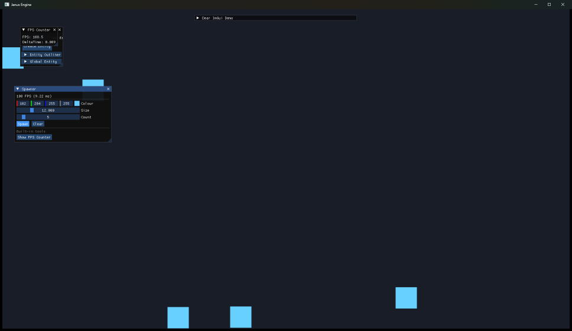

Loading...
Searching...
No Matches
Editor tools
Write your own ImGui tool window that spawns entities, open and close it from code, and reopen the engine's built-in tools.

The Spawner tool after pressing Spawn once
The tool
SpawnerToolexamples/modules/EditorTools.cpp
// An editor tool is a class with a Draw_Internal() function. The engine calls it
// every frame while the tool is open, between ImGui::NewFrame() and rendering,
// so any ImGui call works here.
public:
int SpawnedCount = 0;
protected:
void Draw_Internal() override {
ImGui::SetWindowCollapsed("Dear ImGui Demo", true, ImGuiCond_Once);
// Positions are in screen coordinates (multi-viewport is on),
// so place it relative to the main window.
// A window dragged outside the main window becomes a separate OS window.
const ImGuiViewport* viewport = ImGui::GetMainViewport();
const ImVec2 position {viewport->Pos.x + 40.f, viewport->Pos.y + 260.f};
ImGui::SetNextWindowPos(position, ImGuiCond_FirstUseEver);
ImGui::SetNextWindowSize({330.f, 0.f}, ImGuiCond_FirstUseEver);
// Passing &bOpen gives the window a close button that closes the tool.
ImGui::Begin("Spawner", &bOpen);
ImGui::Text("%.0f FPS (%.2f ms)", fps, frameMs);
ImGui::Separator();
static float color[4] = {0.4f, 0.8f, 1.f, 1.f};
static float size = 12.f;
static int count = 5;
ImGui::ColorEdit4("Colour", color);
ImGui::SliderFloat("Size", &size, 4.f, 40.f);
ImGui::SliderInt("Count", &count, 1, 50);
if (ImGui::Button("Spawn")) {
static std::mt19937 rng {1};
std::uniform_real_distribution<float> x(0.f, ScreenW - size);
std::uniform_real_distribution<float> y(0.f, ScreenH - size);
const SDL_FColor tint {color[0], color[1], color[2], color[3]};
flecs::entity last;
for (int i = 0; i < count; ++i) {
const std::string name = "Spawned " + std::to_string(SpawnedCount++);
last = ECS::GetWorld().entity(name.c_str())
.set<FTransformComponent>({ .Location = {x(rng), y(rng), 0.f} })
.set<FTexture2DComponent>({
.Sprite = { .SpriteSheet = {"White"} },
.TextureSize = {size, size},
.Color = tint,
})
.set<FRenderingComponent>({ .RenderLayer = Renderer::Entities });
}
ECS::SelectEntity(last); // show the newest one in the Entity Debugger
Log::EditorDemo::Info("Spawned {} entities", count);
}
ImGui::SameLine();
if (ImGui::Button("Clear")) {
// Tools run outside the ECS update, so changes are applied immediately.
// Defer them while iterating, so destroying entities doesn't disturb
// the iteration.
flecs::world& world = ECS::GetWorld();
world.defer([&world] {
world.each([](flecs::entity entity, const FTexture2DComponent&) {
const std::string name = entity.name().c_str();
if (name.starts_with("Spawned")) {
entity.destruct();
}
});
});
}
ImGui::Separator();
ImGui::TextDisabled("Built-in tools");
if (ImGui::Button("Show FPS Counter")) {
// Reopens the existing instance
}
ImGui::End();
}
void OnOpenStateChanged(bool bIsOpen) override {
Log::EditorDemo::Info("Spawner tool {}", bIsOpen ? "opened" : "closed");
}
};
Opening and toggling
Open once, toggle with F2examples/modules/EditorTools.cpp
// Open<T>() creates the tool the first time,
// and returns the same instance afterwards.
TObjectPtr<SpawnerTool> spawner = CoreEditor::Open<SpawnerTool>();
// Tools can be closed and reopened from game code. A closed tool keeps its state.
world.system("ToggleSpawner").run([spawner](flecs::iter& it) {
if (Input::IsActionTriggered(Input::Actions::ToggleSpawner)) {
if (spawner->bOpen) {
spawner->Close();
} else {
spawner->Open();
}
}
while (it.next()) {}
});
Full source
EditorTools.cppexamples/modules/EditorTools.cpp
// Module example: editor tools and ImGui.
//
// Controls: F2 shows or hides the "Spawner" tool. Use its widgets to create entities.
//
// Shows:
// - writing an editor tool (ImGUIWrapper::IEditorTool)
// and opening it with CoreEditor::Open
// - closing and reopening a tool from code
// - the engine's built-in tools: Entity Debugger and FPS Counter
// (CoreEditor::DebugStatsEditor)
// - selecting entities for the Entity Debugger with ECS::SelectEntity
// - reading frame timing from Engine::Globals
// Uses no files.
#include <Module.hpp>
#include <Log/Module.hpp>
#include <Input/Module.hpp>
#include <Editor/Module.hpp>
#include <Editor/DebugStatsEditor.hpp>
#include <Filesystem/Module.hpp>
#include <Types/Graphics.hpp>
#include <Types/EngineGlobals.hpp>
#include <Gameplay/ECS/Module.hpp>
#include <Gameplay/ECS/Modules/TransformModule.hpp>
#include <Gameplay/ECS/Modules/GraphicsModule.hpp>
#include <Rendering/Components/RenderingComponent.hpp>
#include <imgui.h>
#include <cstdlib>
#include <random>
// The engine's components (FTransformComponent, FTexture2DComponent, ...).
using namespace Components;
DECLARE_LOGGER(EditorDemo, debug)
DEFINE_INPUT_ACTION(ToggleSpawner, bool)
constexpr float ScreenW = 320.f, ScreenH = 180.f;
// ---- Scene helpers (the same in every example) -------------------------------
static void RegisterSolidTexture(const std::string& AssetPath, int Size) {
SDL_Surface* surface = SDL_CreateSurface(Size, Size, SDL_PIXELFORMAT_ABGR8888);
const Uint32 white = SDL_MapSurfaceRGBA(surface, 255, 255, 255, 255);
SDL_FillSurfaceRect(surface, nullptr, white);
TObjectPtr<Graphics::STexture2D> texture;
texture->Surface = surface;
texture->Width = static_cast<float>(Size);
texture->Height = static_cast<float>(Size);
texture->AssetPath = AssetPath;
TObjectPtr<Filesystem::SAssetData> assetData;
assetData->AssetPath = AssetPath;
assetData->AssetName = AssetPath;
assetData->AssetType = Filesystem::TEXTURE;
assetData->ObjectData = texture;
Filesystem::RegisterAssetData(assetData);
}
World.entity("Camera")
.set<FTransformComponent>({})
.set<FCameraComponent>({
.CameraSize = {ScreenW, ScreenH},
.Boundaries = {0, 0, 0, 0},
})
.set<FLightComponent>({ .Radius = 100.f, .Intensity = 2.4f });
World.entity("Background")
.set<FTransformComponent>({})
.set<FTexture2DComponent>({
.Sprite = { .SpriteSheet = {"White"} },
.TextureSize = {ScreenW, ScreenH},
.Color = Color,
})
.set<FRenderingComponent>({ .RenderLayer = Renderer::Background });
}
// An editor tool is a class with a Draw_Internal() function. The engine calls it
// every frame while the tool is open, between ImGui::NewFrame() and rendering,
// so any ImGui call works here.
public:
int SpawnedCount = 0;
protected:
void Draw_Internal() override {
ImGui::SetWindowCollapsed("Dear ImGui Demo", true, ImGuiCond_Once);
// Positions are in screen coordinates (multi-viewport is on),
// so place it relative to the main window.
// A window dragged outside the main window becomes a separate OS window.
const ImGuiViewport* viewport = ImGui::GetMainViewport();
const ImVec2 position {viewport->Pos.x + 40.f, viewport->Pos.y + 260.f};
ImGui::SetNextWindowPos(position, ImGuiCond_FirstUseEver);
ImGui::SetNextWindowSize({330.f, 0.f}, ImGuiCond_FirstUseEver);
// Passing &bOpen gives the window a close button that closes the tool.
ImGui::Begin("Spawner", &bOpen);
ImGui::Text("%.0f FPS (%.2f ms)", fps, frameMs);
ImGui::Separator();
static float color[4] = {0.4f, 0.8f, 1.f, 1.f};
static float size = 12.f;
static int count = 5;
ImGui::ColorEdit4("Colour", color);
ImGui::SliderFloat("Size", &size, 4.f, 40.f);
ImGui::SliderInt("Count", &count, 1, 50);
if (ImGui::Button("Spawn")) {
static std::mt19937 rng {1};
std::uniform_real_distribution<float> x(0.f, ScreenW - size);
std::uniform_real_distribution<float> y(0.f, ScreenH - size);
const SDL_FColor tint {color[0], color[1], color[2], color[3]};
flecs::entity last;
for (int i = 0; i < count; ++i) {
const std::string name = "Spawned " + std::to_string(SpawnedCount++);
last = ECS::GetWorld().entity(name.c_str())
.set<FTransformComponent>({ .Location = {x(rng), y(rng), 0.f} })
.set<FTexture2DComponent>({
.Sprite = { .SpriteSheet = {"White"} },
.TextureSize = {size, size},
.Color = tint,
})
.set<FRenderingComponent>({ .RenderLayer = Renderer::Entities });
}
ECS::SelectEntity(last); // show the newest one in the Entity Debugger
Log::EditorDemo::Info("Spawned {} entities", count);
}
ImGui::SameLine();
if (ImGui::Button("Clear")) {
// Tools run outside the ECS update, so changes are applied immediately.
// Defer them while iterating, so destroying entities doesn't disturb
// the iteration.
flecs::world& world = ECS::GetWorld();
world.defer([&world] {
world.each([](flecs::entity entity, const FTexture2DComponent&) {
const std::string name = entity.name().c_str();
if (name.starts_with("Spawned")) {
entity.destruct();
}
});
});
}
ImGui::Separator();
ImGui::TextDisabled("Built-in tools");
if (ImGui::Button("Show FPS Counter")) {
// Reopens the existing instance
}
ImGui::End();
}
void OnOpenStateChanged(bool bIsOpen) override {
Log::EditorDemo::Info("Spawner tool {}", bIsOpen ? "opened" : "closed");
}
};
int main() {
RegisterSolidTexture("CollisionTexture", 8);
RegisterSolidTexture("White", 8);
flecs::world& world = ECS::GetWorld();
Input::AddInputBindings_Press(&Input::Actions::ToggleSpawner, {
{SDL_SCANCODE_F2, true},
});
CreateCameraAndBackground(world, {0.1f, 0.11f, 0.15f, 1.f});
// Open<T>() creates the tool the first time,
// and returns the same instance afterwards.
TObjectPtr<SpawnerTool> spawner = CoreEditor::Open<SpawnerTool>();
// Tools can be closed and reopened from game code. A closed tool keeps its state.
world.system("ToggleSpawner").run([spawner](flecs::iter& it) {
if (Input::IsActionTriggered(Input::Actions::ToggleSpawner)) {
if (spawner->bOpen) {
spawner->Close();
} else {
spawner->Open();
}
}
while (it.next()) {}
});
Log::EditorDemo::Info("F2 toggles the Spawner tool. Close the window to quit.");
Engine::Run();
// Known issue: avoid the crash in static destructors after teardown.
std::quick_exit(0);
}
float GetDeltaTime()
Get the most recently reported DeltaTime for this tick.
void SelectEntity(flecs::entity Entity)
Makes Entity the one the Entity Debugger shows.
TObjectPtr< TEditorTool > Open()
Opens the tool of type TEditorTool, creating and registering it the first time.
Definition Module.hpp:25
void InitializePlugins()
Starts SDL and every engine module that needs starting, in dependency order, and opens the game windo...
void TeardownPlugins()
Shuts the engine modules down in reverse order and calls SDL_Quit().
void Run()
Runs the game loop until the window is closed: input, ECS systems, editor tools, rendering.
void RegisterAssetData(const TObjectPtr< SAssetData > &AssetData)
Adds an asset to the registry under AssetData->AssetPath.
#define DEFINE_INPUT_ACTION(InActionName, ValueType)
Declares Input::Actions::InActionName, an Input::SAction<ValueType> whose bindings' values are added ...
Definition InputTypes.hpp:103
void AddInputBindings_Press(SAction< TValueType > *Action, std::initializer_list< SInputBinding< TValueType > > InputBindings)
Adds bindings that trigger on the frame their key goes down (and on key repeat).
Definition Module.hpp:35
bool IsActionTriggered(const SAction< TValueType > &Action)
Returns true if any of the action's bindings triggered this frame.
Definition Module.hpp:84
#define DECLARE_LOGGER(Namespace, InLogLevel)
Same as DECLARE_LOGGER_WITH_PARAMS with LOG_ALL outputs and the shared JanusEngine log file.
Definition Module.hpp:41
Definition World.hpp:20
Where an entity is: glm::vec3 Location, glm::vec3 Rotation, glm::vec3 Scale.
Definition TransformModule.hpp:20